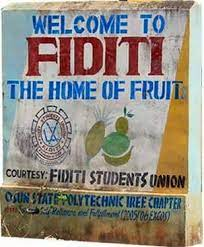
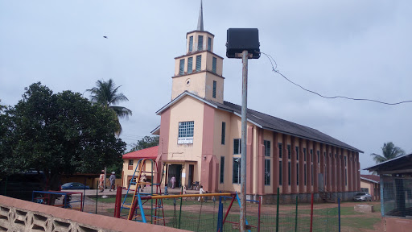

Welcome To Fiditi
Home of fruit
Fiditi is a village located in Oyo state, Nigeria. with approximately 20,000 occupants and their major occupation is farming. fiditi is a village sharing the same local government area with it's neighbouring villages. fiditi is under Afijio Local Government area, the Acronomyn Afijo stands for "AWE", "FIDITI", "ILORA", "JOBELE", "OLUWATEDO" areas. fiditi was founded in the year

Fiditi is a village with fewer individuals. my home town has fewer compounds and most individual living are migrant with majority having their origin in. one of the oldest family house in fiditi is Agbaakin . somehow, most individuals are related by shared ancestry. we are rulled by a king. i was thrilled to find out after 13 years of the king seat been vacant. There is now somebody worthy enough to take the throne.
